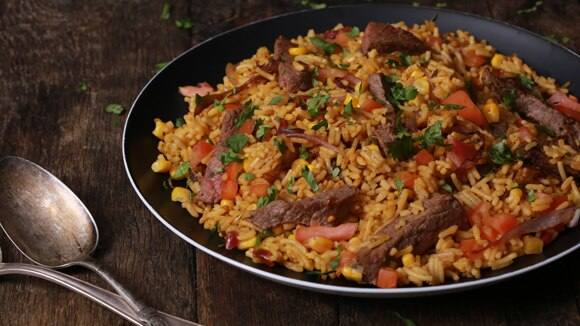

Home Page
Steak and Rice

Rice is very popular in hispanic and Chinese culture. You can never go wrong with a classic bowl of rice and steak. I'ts normally one of the first dishes you learn in these cultures.
This is another beginner friendly recipe to learn.
Ingredients
- Skirt steak
- White rice
- Seasoning
- Vegetable oil
- Lemon juice
- Minced garlic
- Butter
How to Make a Steak and Rice Bowl
- Begin by cutting the skirt steak into evenly sized cubes. Then you can add salt, pepper, and any other seasonings you would like.
- Begn to heat up a pot with a tablespoon of vegetable oil. As that heats up begin washing your rice. Use about 1 cup of rice and 2 cups of water.
- Once the water is clear. Add Sazon to give the rice some more flavor and the yellow color you see in spanish rice. Begin cooking the rice.
- Cook your steak evenly. Halfway through the process add a tablespoon of butter, minced garlic, and lemon juice. Then stir all of it around. melting the butter evenly.
- When the rice cooker shows that it's ready, fluff the rice by grabbing a fork and moving the rice around in a up and down motion. DOn't stir the rice.
- When the steak is done, add it to your rice and make sure to use the juices that were made while cooking. Mix it all up and enjoy!